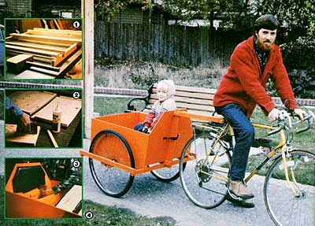
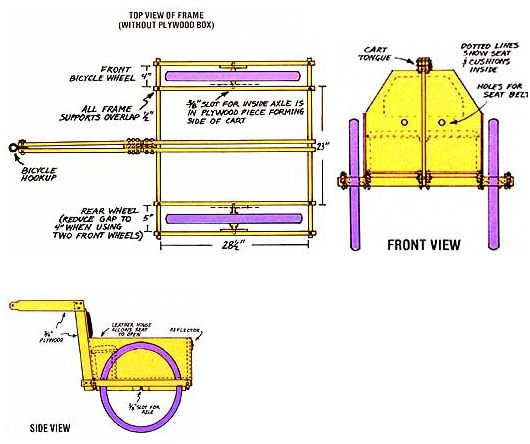
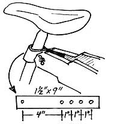
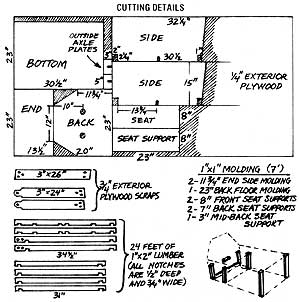

On a typical busy summer day I might go shopping with my daughter and bring back a full month's supply of groceries. Then, after unloading, I might take my kayak in for repairs and return home with, say, 100 pounds of lumber. Now there's nothing very earthshaking about accomplishing those chores ... but most folks are surprised to learn that I handle the bulk of such household hauling tasks with my bicycle!
The fact is, with a good cart in tow, a bike can be every bit as useful as a car is. Furthermore, well-designed trailers are neither difficult to pull nor awkward to maneuver. I've found I can cruise level roads in high gear, even while pulling a full load.
Unfortunately, most ready-made bicycle carts sell for upward of $200. Worse yet, many of the haulers lack well-thought-out safety features and the capability of handling loads heavier than those that can be carried in saddlebags or baskets.
My homemade cart, on the other hand, should cost about $20 to build (if you have a pair of old bicycle wheels around) ... will carry 100 pounds or more ... won't turn over if the bike takes a spill ... has a padded seat for a passenger ... doesn't allow a young rider's fingers to reach the spinning spokes ... and can be built by anyone who has access to a drill, hammer, saw, and screwdriver!
The most potentially expensive-and often the weakest-components of any bicycle trailer are the wheels. Buying two new ones, with tires, could set you back $60 or more . . . so your best bet will probably be to scavenge a pair from a broken bike. While choosing them, however, look for relatively small wheels with thick axles, in order to make this crucial part of your cart as sturdy as possible.
The carrier pictured here uses 26-inch wheels, which are slightly stronger than 27inch units would have been. To make your hauler sturdier still, try to locate a pair of 20 inchers ... the best of which are those from children's "motocross" bikes. (If you use the small wheels, though, remember that-while they'll lower the center of gravity and thus make your cart more stable - they'll require a tongue support that's about three inches longer than 'the one indicated in the "Cutting Details" drawing.)
Rear wheels, it should be noted, are :both heavier and stronger than "fronts" ;(the back rollers generally have 3/8"diameter axles rather than 1/4"). My plans call :for using one front and one rear wheel, since that combination is what most folks will have on hand or be able to buy inexpensively. If you want to use two rear or two front units, you'll have to modify the plans to account for the changes in width where the axle bolts attach to the cart's frame.
Once the wheels are on hand (and the plans modified, if necessary, to suit them), you can begin construction of the frame ... which consists of eight lengths of 1 X 2 (half are 34-1/2" long, while the rest measure 31 " apiece), notched and bolted together as illustrated. The grooves themselves are all 1/2" deep and 3/4" wide, and are positioned as follows:
Each of the four 31 " lengths of 1 X 2 will have a notch spaced 1/2 inch, at its outer edge, from each of the board's two ends.
Two of the 34-1/2" lengths will have a notch 1/2 inch - on edge - from one end, and a second notch starting 4 inches from the other end.
The two remaining 34-1/2" lengths will have six notches apiece. The outer ones will, again, start 1/2 inch from the boards' ends ... while the other four should be spaced as depicted in the "Top View of Frame" diagram. Make sure that the outside edges of the two 31 " struts that will later support the plywood bed (the two that will be just inside the wheels) are exactly 23 inches apart when the platform is loosely assembled, and that the pair of central braces are 3/4 inch apart . . . allowing space for the 3/4" plywood upright tongue support to slip between them and be bolted in place.
When everything has been fitted and checked (chisel excess material out of the notches as necessary), pound the frame together with a mallet to obtain a snug fit. Then drill 1/4" holes, vertically, through the eight joints that surround the wheel openings, and secure those unions with 3" carriage bolts. (The four central joints will-later-be held in place by the plywood bottom and thus need no additional fastening at this stage.)
The bed of my bike cart is made of sturdy 1/4" plywood, cut to the dimensions shown in the accompanying "Cutting Details" drawing. Take special care, when shaping the side pieces, that the axle slots are positioned to allow clearance for the tire on both sides, are as wide as the diameter of axle used, and are 1-1/2" deep with rounded ends as shown (use a file to achieve a smooth, curved surface).
The bottom of the bed should be the first component fitted to the frame and must be laid down flush with the side and back support boards. Remove the four carriage bolts that the plywood would otherwise cover . . . glue the base of the bed in place . . . secure it with several nails . . . turn the frame upside down . . . drill through the bolt holes in the frame's bottom, and replace the threaded fasteners to join the bed to the base.
Now, cut 1 X 1 molding to the dimensions specified in "Cutting Details". Glue and nail the appropriate blocks to the edges of the plywood sides, seat support, and back section, as illustrated ... then add a few 3/4" wood screws (through predrilled holes) to bind the joints tightly.
After that's done, the unbraced 13-112" X 23" plywood end section can be secured-with glue and wood screws-to the rear of the frame . . . followed by the two plywood sides (fasten the already installed end piece to their 1 X 1 X 11-3/4" molding supports). The seat back (which is at the front of the cart) can be added next, but-before gluing it in place-drill a pair of 1" holes, just halfway down the 20" dimension and 5-1/2 inches in from the edge, to allow you to install a simple web-and-buckle safety belt later on. Finally, install the seat support just far enough from the back so that the seat itself will rest on it and on the 1 X 1 X 3" brace.
The wheel axles will, of course, need to be supported on their outer ends as well as at the points where they enter the sides of the cart. To allow for this, cut two 3" X 5" pieces of 114" plywood, and form an axle slot in each of them. When positioning these plates, turn the cart upside down and drop a yardstick into the grooves cut in the plywood carriage sides. The slots in the in-place axle plates must fit the yardstick exactly. Mark the correct positions on the outer 1 X 2 frame pieces .. . then remove those frame members, glue and screw the axle holders down, and reinstall the assemblies.
The tongue support on the bike cart is simply a 3" X 26" piece of sturdy 314" exterior plywood. (As mentioned before, if your cart's wheels are smaller than 26", you'll need to increase the height of the tongue support. Check it against that of the bicycle seat before drilling and bolting on the arms. With the wheels in place, the cart should ride level when the tongue is attached just below the bike's seat.) After cutting the plywood to size, be sure that its end just fits between the two central frame pieces (you may have to file the support a little). Once it's snug against the seat back, clamp the plywood in position . . . drill two 1/4" holes through all three boards . . . unclamp the assembly . . . put glue on all surfaces that will make contact . . . and bolt the upright in place. (You may also want to run a few screws through the seat back and into the 3/4" edge of the plywood to assure a good bond.)
While the support assembly dries, cut two pieces of plywood to form the tongue that runs from the cart to the bicycle, and shape them as illustrated . . . with slight angles in the ends (to fit flush against the cart's back) and tapers on the tips that will be secured to the bike (to allow for freedom of movement under the bicycle seat). Drill a 1/4" hole, centered and 314 inch from the front end of each tongue piece, where the connecting unit will bolt on.
I painted my cart-to make it more attractive and visible and to preserve the wood-with two coats of an exterior oilbased gloss enamel. Remember, if you do the same, that bright yellow and orange are quite visible at night . . . but that a darker-hued cart should be trimmed with reflective tape as a safety precaution. [EDITOR'S NOTE: We recommend that inexpensive plastic reflectors be mounted on the cart regardless of its color.]
If you plan to pad the seat, it won't be necessary to paint it first, but the unit should be cut down to 22-1/2" to allow room for the vinyl covering and padding. Cut a scrap of 1"-thick foam rubber to size . . . trim a piece of vinyl cloth 2" longer, on all sides, than the foam . . . fold the cover over the padding and the wood ... and secure it with 114" staples or tacks. The finished seat can then be fastened to the cart. (If you use stapled-down scrap leather hinges to do so, it can then be lifted like a lid to permit storage of tools or what have you underneath.) Attach a second piece of covered foam rubber to the seat back, as shown in the "Front View" drawing, for additional comfort.
Now's as good a time as any to put the wheels on your "horseless carriage". Use washers to prevent the axle bolts from chewing up the plywood slots . . . and be sure the rollers are on tight so they won't lean under a load.
The cart-to-bicycle hookup is nothing more than a length of old auto tire sidewall cut (with a knife or hacksaw) and drilled as indicated in the "Attachment Assembly" drawing (use a 318" leather or grommeting punch to form the holes). Just wrap the strip around the seat post of your bike and bolt its ends-trying various combinations of holes to get a good solid, yet flexible, connection-between the tips of the cart's tongue.
Your finished carrier should prove invaluable in handling any number of homestead chores. Just take it easy when going over bumps, be sure to weight any heavy loads toward the front of the cart, and bear in mind that your two-wheeler is now a wider, four-tired conveyance . . . and you shouldn't have any problem getting used to riding with the trailer in tow.
I've seen bike carts adapted to do everything from making deliveries for a local bakery to taking the family hound for a daily spin. As for me, I mostly haul groceries, laundry, and my youngsters around. Every once in a while, though, I still draw stares while on my way to an outdoor barbecue . . . with a picnic table securely in place behind my bike!
|
 1]The cart's frame is constructed from notched 1 X '2s, which are bolted in place. [2] Molding blocks are glued and nailed (or stapled) onto the edges of the plywood sections. [3] A padded seat provides passenger comfort. [4] My trailer totes loads both big and small! |
 |
 |
|
 |
|
|